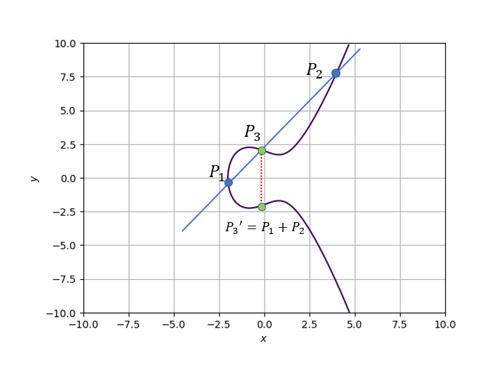
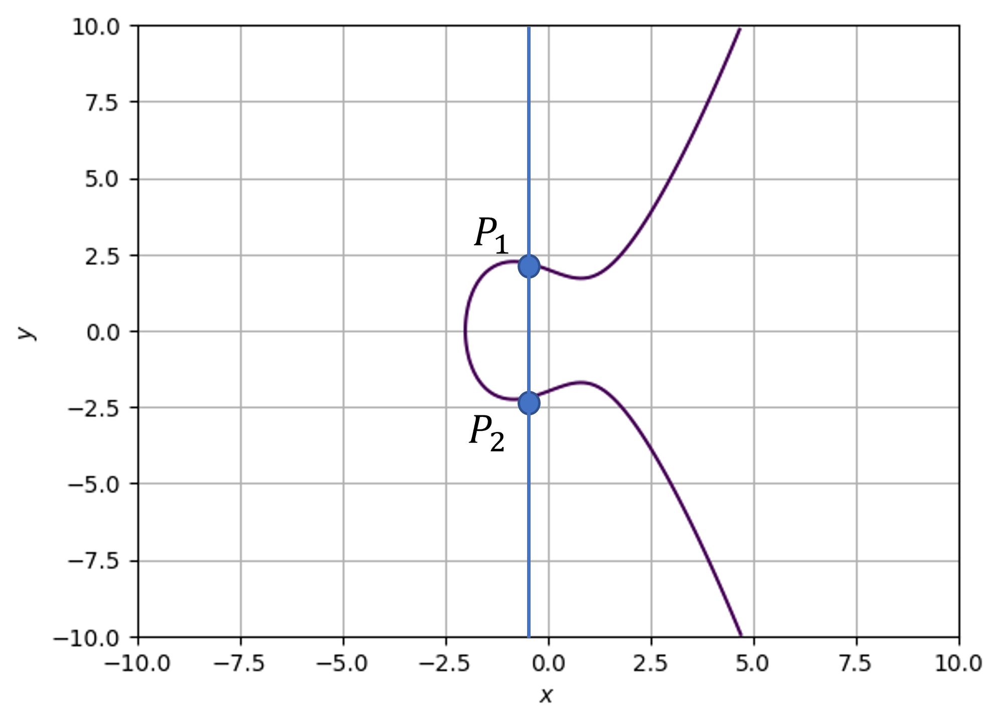
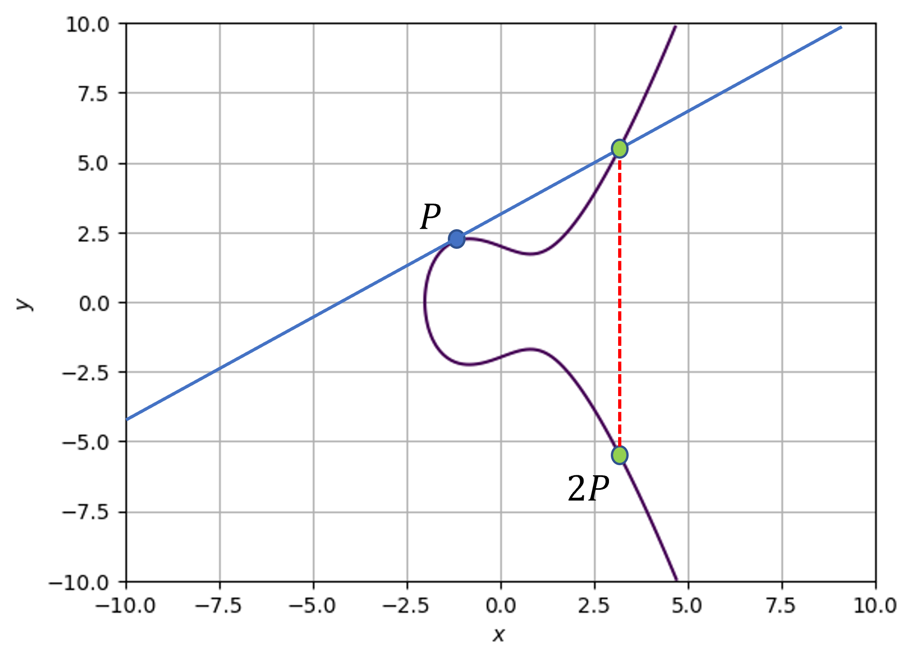
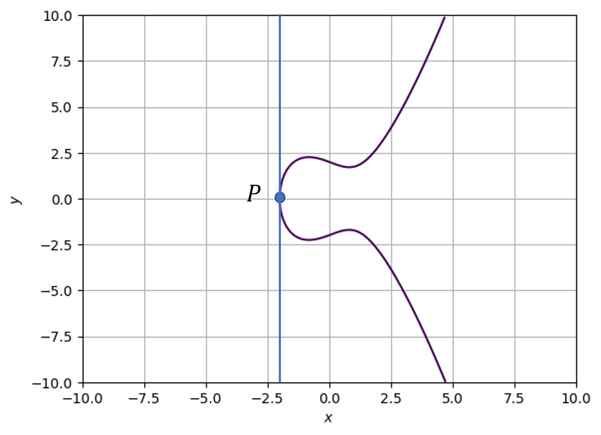
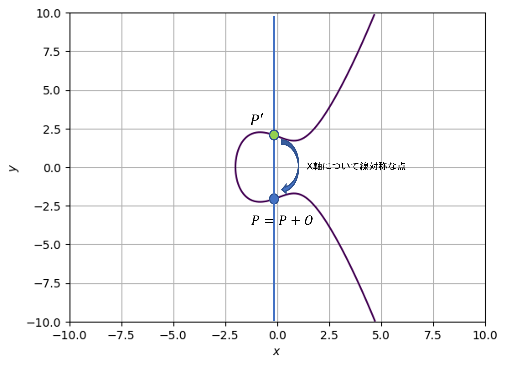

楕円曲線暗号（その１）#
楕円曲線暗号は一つの暗号を指したものではなく，楕円曲線を用いた暗号の総称である．例としては次節で説明するECDSAやECDHなどがある．RSA暗号やElGamal暗号は非常にわかりやすく使い勝手がいい暗号であるが，安全面では楕円曲線暗号のほうが優れている．楕円曲線暗号はRSAと同じ安全性をもつために必要な鍵長が短い点が大きな特徴である．また、その鍵長の短さゆえに計算も高速に行うことができる．楕円曲線暗号は楕円曲線上の有理点の演算によって成り立つ暗号である．
楕円曲線#
\(p\)を素数（ただし簡単のため\(p\neq2,3\)）とする．有限体\(F_p\)上の楕円曲線\(E\)とは定数\(a,b\in F_p\)を用いて
と表すことができる．(1)式を満たす\((x,y)\in \mathbb{Z}_p\)の組からなる点\((x,y)\)を有理点 という．また，全ての有理点に無限遠点 と呼ばれる\(O(\infty,\infty)\)を加えた集合を\(E(F_p)\)と表す．
例として楕円曲線を二つプロットしてみる。
\(y^2 = x^3 -4x + 1\)
import numpy as np
import matplotlib.pyplot as plt
import math
fig, ax = plt.subplots()
#x,y
delta = 0.1
xrange = np.arange(-10, 10, delta)
yrange = np.arange(-10, 10, delta)
x, y = np.meshgrid(xrange,yrange)
ax.axis([-10, 10, -10, 10])
#Eliptic curve
z = y**2 - x**3 +4*x -1
#plot
ax.contour(x,y,z,[0])
ax.set_xlabel('$x$')
ax.set_ylabel('$y$')
ax.grid()
plt.show()
\(y^2 = x^3 -2x + 4\)
import numpy as np
import matplotlib.pyplot as plt
import math
fig, ax = plt.subplots()
#x,y
delta = 0.1
xrange = np.arange(-10, 10, delta)
yrange = np.arange(-10, 10, delta)
x, y = np.meshgrid(xrange,yrange)
ax.axis([-10, 10, -10, 10])
#Eliptic curve
z = y**2 - x**3 +2*x -4
#plot
ax.contour(x,y,z,[0])
ax.set_xlabel('$x$')
ax.set_ylabel('$y$')
ax.grid()
plt.show()
\(y^2\)からも明らかなように、\(x\)軸に対して対称な形をとる。
楕円曲線上の計算#
楕円曲線はその有理点集合が足し算に関して可換群を成す。特に、有限体上では有限可換群となるため楕円曲線上の離散対数問題を定義することが出来る。以下では楕円曲線上の足し算について解説する。
\(P_1,P_2\)を楕円曲線\(E\)上の異なる有理点であるとし、その二点を結ぶ直線を\(\overline{P_1P_2}\)と表す。この直線は楕円曲線上の異なる有理点\(P_3\)と交わる。また、\(P_3'\)を\(P_3\)と\(x\)軸に関して線対象な点とする。この状況で、楕円曲線上の加算(以下楕円加算と呼ぶ)は以下のように定義される。
以下の図を見てもらうとわかりやすい。 
この加算をさらに詳しく見ていく。まず、\(P_1 = (x_1,y_1),\quad P_2 = (x_2,y_2)\)加算後の点\(P_3'\)を求める際の場合分けをする。 以下は全て有限体\(F_p\)上の演算であるとする。（つまり\(\mod{p}\)の演算になる）
異なる2点の和（\(P_1 \neq P_2\),\(\quad P_1,P_2 \neq O\)）
\(x_1 \neq x_2 \)のとき
上の図の状況である。直線\(\overline{P_1P_2}\)は傾きを\(m = \frac{y_2 - y_1}{x_2 - x_1}\)とすると
で表すことができる。これを楕円曲線の式(1)に代入して
が得られる。この式から3次方程式の解と係数の関係を用いて，この方程式の解\(x_1,x_2,x_3\)の関係を導くことができる。
よって\(P_3' = (x_3',y_3')\)は
となる。
\(x_1 = x_2\)のとき
直線\(\overline{P_1P_2}\)は\(y軸と平行な線になり、無限遠点\)O$で交わると考えると
となる。以下の図の様な状況である。

同じ点の和（点の2倍算，\(P_1 = P_2\),\(\quad P_1,P_2 \neq O\)）
点\(P_1 = P_2 = P\)を通る接線\(\overline{PP}\)と楕円曲線\(E\)の交わる点のx軸対称な点を\(P_3'\)と考える。まず、接線をの式を得るために接線の傾きを楕円曲線の式(1)を微分することで得る。
これに点\(P\)を代入したものが接線\(\overline{PP}\)の傾きとなる。よって接線は以下のように表せる 。
\(y_1 \neq 0\)のとき
異なる2点の和のときと同様にして、3次方程式の解と係数の関係から\((x_3',y_3')\)を求める

\(y_1 = 0\)のとき
接線\(\overline{PP}\)は\(x\)軸に対して垂線となり、無限遠点と交わると考える。つまり、

無限遠点との加算
点\(P\)と無限遠点\(O\)の加算は以下の図の通り点\(P\)に帰ってくる。よって
また、式の通り無限遠点\(O\)は単位元として扱える。

楕円曲線と群#
\(E(F_p)\)は楕円加算において
\(P_1 + P_2 \in E(F_p)\)（閉包則）
\((P_1 + P_2) + P_3 = P_1 + (P_2 + P_3)\) （結合法則）
\(P + O = O + P = P\)（単位元の存在）
\(P'\)を点\(P\)のx軸対称な点とすると\(P+P' = P'+P=O\)（逆元の存在）
\(P_1 + P_2 = P_2 + P_1\)（交換法則）
の性質を満たすため、可換群となる。
楕円加算と乗算の実装#
有限体の実装を回避するために楕円曲線上の加算と乗算をSagemath上で実装した．Jupyter Bookでsagemathを実行する方法がわからなかったのでコードだけの紹介とする．（もし知っている方いたら教えていただきたい．）
手軽に試して見たい場合はオンライン上で実行できるSageMathCellに入力すると計算結果を簡単に確認できる．
乗算の部分は以下のサイトを参考に実装させて頂いた．詳細は参考文献に記載してある．
from sympy import isprime
#elliptic curve
class ECC:
def __init__(self,a,b,p):
if isprime(p) == False:
raise Exception("p is not prime number!!")
self.Fp = FiniteField(p)
self.a = self.Fp(a)
self.b = self.Fp(b)
#point on the EC
class ECC_point:
def __init__(self,EC,x,y,infty):
#check the point is really on EC
if EC.Fp(y^2) != EC.Fp(x^3 + EC.a*x + EC.b):
if infty == False:
raise Exception("x,y is not on EC")
self.EC = EC
self.x = EC.Fp(x)
self.y = EC.Fp(y)
self.iszero = infty
def __str__(self):
if self.iszero:
return str(oo)
else:
return str(self.x)+","+str(self.y)
def __add__(self,other):
#self -> O
if self.iszero:
return other
#other->0
if other.iszero:
return self
#same x
if self.x == other.x:
if self.y == -other.y:
return ECC_point(self.EC,0,0,True)
#same x and y
m = (3*(self.x**2) +EC.a)//(2*self.y)
#not same x,y
else:
m = (other.y-self.y)//(other.x-self.x)
x= m**2 - self.x -other.x
y = m*(self.x - x)-self.y
return ECC_point(self.EC,x,y,False)
def __mul__(self,k):
#init
Q = ECC_point(EC,0,0,True)
#binary k
bin_k = bin(k)[2:]
for i in bin_k:
Q = Q + Q
if i == "1":
Q=Q +self
return Q
EC = ECC(2,1,11)
p1 = ECC_point(EC,0,10,False)
p2 = ECC_point(EC,6,3,False)
p3_add = p1+p2
k=2
p3_mul = p1*k
print("add point is:",p3_add)
print("{}mul point is :".format(k),p3_mul)